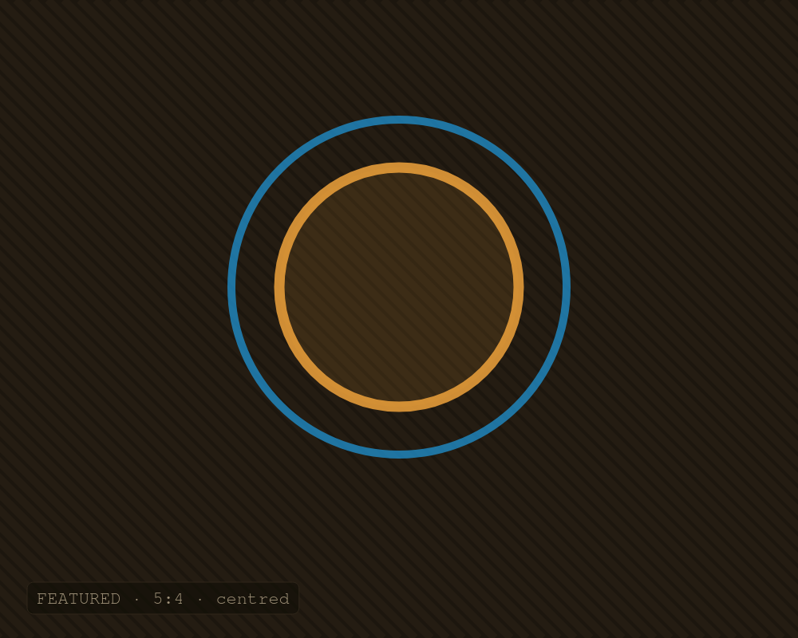
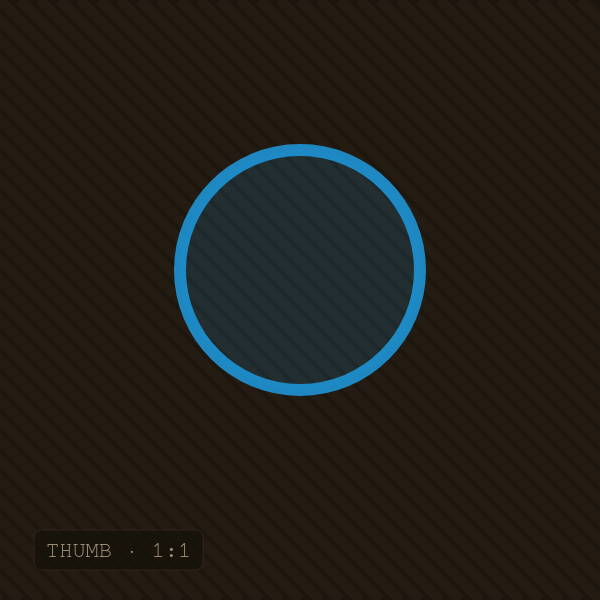

À la une
The quiet machine: building a distraction-free Linux workstation
Window manager, font rendering and a colour scheme tuned for long focus — the full build of the desk I actually work at.
Read the build →cover · 1500×1200

Linux
All articles
48 articles
A reproducible dev environment with Nix flakes
Dev Env9 min readAI-enriched

Self-hosting a homelab on a Raspberry Pi 4 cluster
Raspberry Pi12 min readwithout AI
Container queries finally killed my media-query soup
CSS / Sass6 min readwith AI
k3s on bare metal: lean Kubernetes for the homelab
Kubernetes14 min readAI-enriched
Structuring Sass for scale: a layered architecture
CSS / Sass9 min readwithout AI
Five JavaScript features I reach for daily
JavaScript7 min readwith AI
A calm, fast terminal: tmux + Neovim, ricing done right
Linux10 min readwithout AI